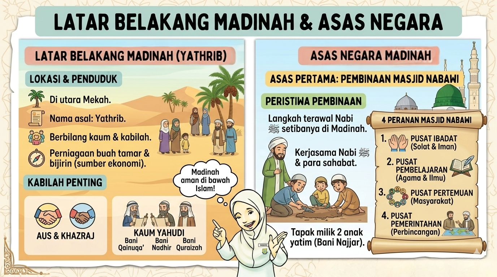

Unit 1
Pembentukan Negara Islam Madinah
Fahami sejarah agung bagaimana Nabi Muhammad SAW membina asas sebuah negara yang hebat.
Nota Infografik
Nota 1
Latar Belakang Madinah & Asas Pertama Negara Madinah (Klik)

Nota 2
Asas Kedua & Ketiga Negara Madinah (Klik)

Uji Minda Pintar (Satu Demi Satu)
SET 1
Latar Belakang & Asas Pertama
Soalan 1 / 13SET 2